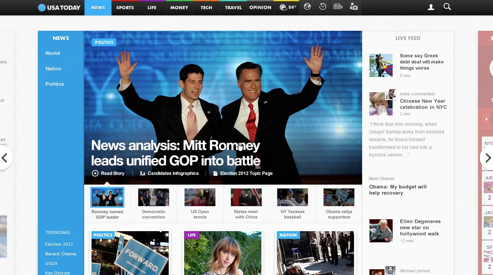
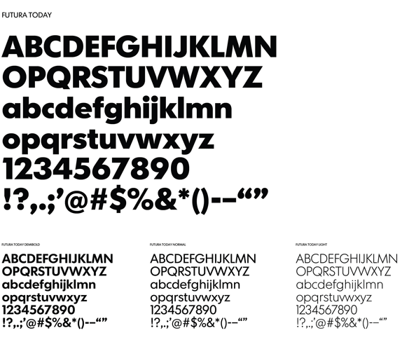

USA TODAY Refreshed
Early this week Wolff Olins revealed a complete multi-platform rebranding and design of USA Today. The simplified and dynamic logo works well as you transition between the sections of the newspaper.
The new site that goes along with the refresh, beta.usatoday.com, feels both fresh and modern. They took some huge risks by trying out unique UX design approaches, but I imagine it will encourage people to spend more time ‘browsing’ through the news.
Follow Wolff Olins on Tumblr